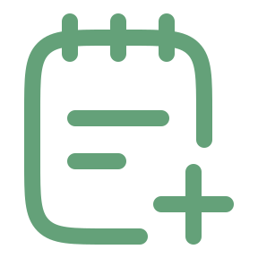

همه تسک ها
0تسک های تکمیل شده
0تسک های تکمیل نشده
0
ایجاد تسک
همه
تکمیل شده
تکمیل نشده

هنوز تسکی وجود ندارد
با کلیک روی دکمه ایجاد تسک جدید,اولین تسک خود را بسازید و شروع به سازمان دهی کارهای خود کنید